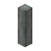

蒸汽引擎的输出轴，转速随效率爬升。
参数
基础转速16 RPM
满效转速64 RPM
来源蒸汽引擎输出
详细教程
怎么获得
动力曲轴没有合成表，它是把一根传动杆右击到蒸汽引擎背面时自动生成的输出轴，引擎摆向哪边，轴就固定长在哪一边，拆掉引擎轴也会一起消失。
想让它转起来，引擎必须有足够的热量、水和锅炉空间，三者缺一就会停转；戴上工程师护目镜右击引擎，可以直接读出当前的锅炉等级和效率，省得靠猜。
怎么用
它本质上是一根带输出的传动杆，转速从 16 RPM 起，随引擎效率成倍提高，效率拉满时能到 64 RPM，后面接一个齿轮箱就能把动力分给整条产线。
曲轴提供的应力同样随转速变化：效率越高，一台引擎能带动的机器越多，但转速提上去以后，单台机器的应力消耗也会跟着上涨，别一味追求满效率。
常见坑
引擎缺水、缺热或者锅炉空间不够时，曲轴会直接停转，这时接再多齿轮也没用；先补水补燃料，再看锅炉等级够不够高，护目镜能省下很多无谓的拆装。
它不能像普通传动杆那样用扳手随手改朝向，想换输出方向只能拆掉引擎重新摆；规划机房时先把朝向定死，能省下大量返工，别等管线铺完才发现反了。
获取方式
这个物品没有合成配方：它由工具或机器直接生成/放置（例如用扳手、连接器、部署器，或作为其他配方的产物）。具体见上方教程。
官方教程 · 使用传动杆传递旋转力
- 传动杆能直线传递旋转力